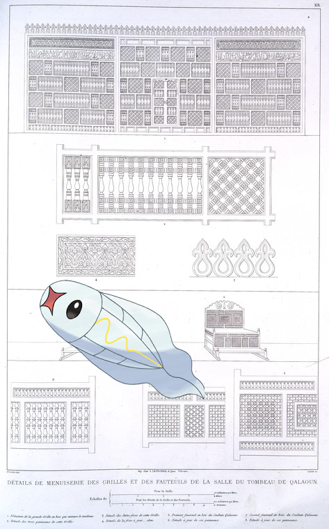
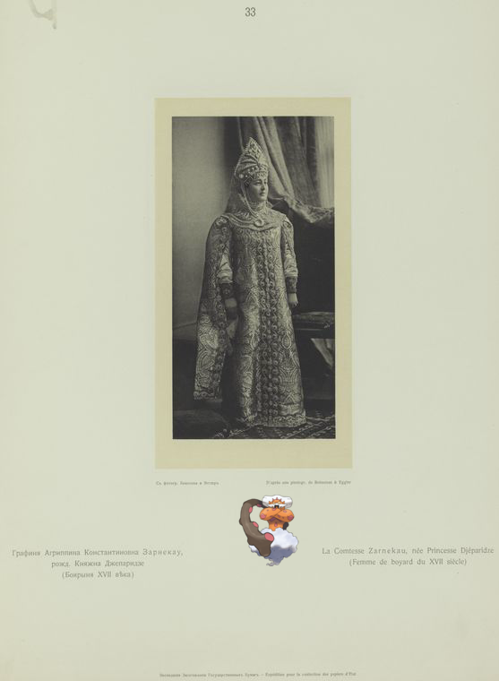
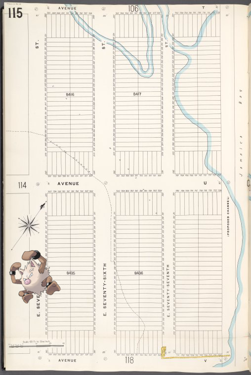
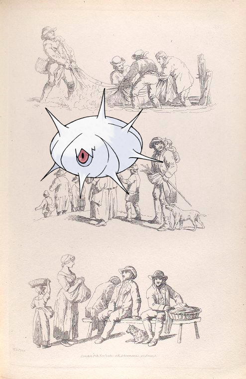
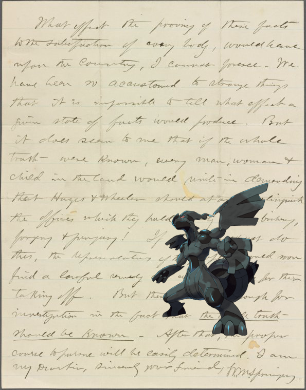
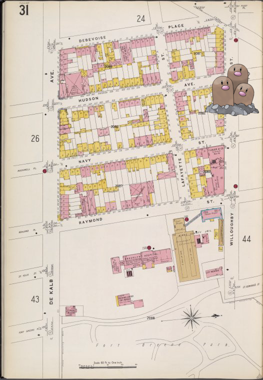
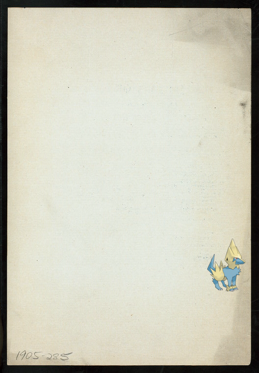

Pokémon in the NYPL archives
2018-6-20 04:10:03

Tynamo ;
Détails de menuiserie des grilles et des fauteuils de la salle du tombeau de Qalaoun
.
2018-6-20 02:10:04

Landorus-Incarnate on
Grafinia Agrippina Konstantinovna Zarnekau, rozhd. Kniazhna Dzheparidze (Boiarynia XVII veka)
2018-6-19 22:10:04

Primeape +
Brooklyn V. 15, Plate No. 115 [Map bounded by Avenue T, Avenue V, E.75th St.]
.
2018-6-19 20:10:03

Silcoon |
[Men lift a net from the water. A family group walks down a hill. People rest on a bench in a marketplace.]]
.
2018-6-19 18:10:25

Zekrom ;
Springer, William M.
2018-6-19 16:10:04

Dugtrio ;
Brooklyn V. 2, Plate No. 31 [Map bounded by De Kalb Ave., Debevoise Place, Willoughby St., Raymond St.]
.
2018-6-19 14:10:07

Manectric ;
DAILY MENU, DINNER SPECIALITIES [held by] SPORTSMANS GRILL [at] "THE BRESLIN, [NEW YORK, NY?]" (HOTEL;)
34
|
33
|
32
|
31
|
30
|
29
|
28
|
27
|
26
|
25
|
24
|
23
|
22
|
21
|
20
|
19
|
18
|
17
|
16
|
15
|
14
|
13
|
12
|
11
|
10
|
9
|
8
|
7
|
6
|
5
|
4
|
3
|
2
|
1
|
0